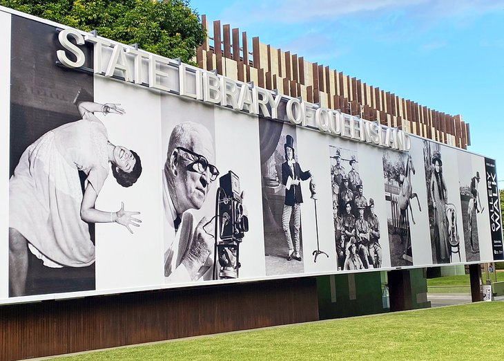
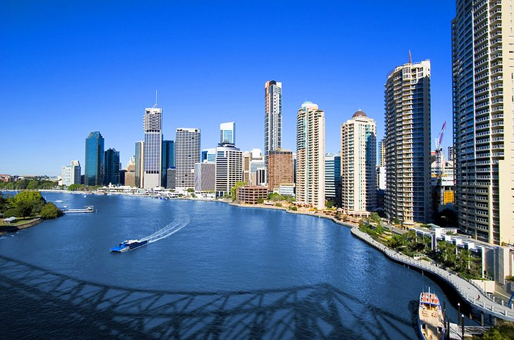

Brisbane
Brisbane land of the Turrbal Country, is the capital and most populous city of the Australian state of Queensland, and the third-most populous city in Australia. Brisbane's metropolitan area has a population of around 2.6 million, and it lies at the centre of the South East Queensland metropolitan region, which encompasses a population of around 3.8 million. The Brisbane central business district is situated within a peninsula of the Brisbane River about 15 km (9 mi) from its mouth at Moreton Bay, a bay of the Coral Sea. The metropolitan area extends in all directions along the hilly floodplain of the Brisbane River Valley between Moreton Bay and the Taylor and D'Aguilar mountain ranges. It sprawls across several of Australia's most populous local government areas (LGAs) — most centrally the City of Brisbane, the most populous LGA in the nation. The city is named for the Brisbane River on which it stands, which is in turn named for Sir Thomas Brisbane, the governor of New South Wales at the time of the city's founding. The Moreton Bay penal settlement was founded in 1824 at Redcliffe as a place for secondary offenders from the Sydney colony, and soon moved to North Quay in 1825. Christian missionaries established Zion Hill in 1838, and by 1842 the region opened to free settlement. Brisbane was chosen as the capital when Queensland separated from New South Wales in 1859, and by the late 19th century had grown into a major port city and centre of immigration. During World War II, Brisbane played a central role in the Allied campaign and served as the South West Pacific headquarters for United States Army General Douglas MacArthur. Brisbane is classified as a global city (Beta +), and is an advanced centre of research and innovation in the Asia-Pacific. The city is promoted as Australia's capital of technology, with strengths in mining research and green energy, medicine and biotechnology, cryptocurrency and digital industries, and robotics. A transportation hub, Brisbane is served by a large suburban rail network and popular bus and ferry networks, as well as Australia's largest and busiest airport, and the third largest seaport. The financial district is centered on Eagle Street.
Pine Koala Sanctuary

Ever wanted to cuddle a koala? At Lone Pine Koala Sanctuary, you can tick this lifelong dream off your bucket list. You can also get up close with more than 70 species of other lovable Aussie animals. Hand-feed kangaroos, cackle with kookaburras, and watch as flocks of kaleidoscopic rainbow lorikeets descend during a feeding. Wallabies, wombats, dingoes, snakes, and even crocodiles also live in this compact sanctuary nestled on the Brisbane River. Keeper talks and interactive demonstrations keep animal lovers engaged. Daily encounters and experiences include bird of prey flight demonstrations, platypus feeding, sheep dog and shearing shows, Tasmanian devil keeper talks, and barn animal encounters. Not surprisingly, visiting this famous Brisbane attraction is one of the top things to do in Brisbane with the family. In addition to the ultimate cuddling a koala photograph, you can also take home a souvenir snap of you with a dingo or snake. Insider's tip: A popular way to travel here is on the Lone Pine Koala Sanctuary Admission with Brisbane River Cruise. The cruise departs from Brisbane's Cultural Centre Pontoon.
Museums & Galleries in the Cultural Centre
On the banks of the Brisbane River, the heritage-listed Cultural Centre in South Bank is a fantastic, family-friendly destination for a day out. Here, you'll find an impressive collection of museums, galleries, and performance venues. Award-winning architecture adds to the precinct's beautiful setting on the river near picturesque parklands. You'll find plenty of things to do here for the whole family. Browse the excellent collections at the State Library of Queensland; keep the kids entertained with the Queensland Museum and Sciencentre's interactive exhibits; or admire thought-provoking, cutting-edge art at the popular Queensland Art Gallery & Gallery of Modern Art (QAGOMA). The Queensland Performing Arts Centre (QPAC) here stages world-class performances of everything from opera and ballet to comedy shows and contemporary music concerts. Right nearby are the South Bank Parklands, where you can relax on the riverfront amid the lush lawns and gardens, or take a ride on the Wheel of Brisbane.
River Cruise
One of the best ways to go sightseeing in Brisbane is aboard a river cruise. The Brisbane River runs through the heart of the city, and many of the city's top attractions line its banks, vying for your attention. This is an excellent way to gain a fresh perspective of Brisbane landmarks such as the Story Bridge, Kangaroo Point Cliffs, and even some of the wildlife, like the fruit bats that gather along the mangroves on the riverbank. Once you experience a scenic overview of the city on the water, you can get your bearings, and pinpoint places to spend more time during your visit. River City Cruises run some of the most popular tours. They range from 90-minute morning or afternoon cruises to sunset cruises and longer excursions. A great choice is the 3.5-hour Cruise to Lunch Package. Along the way, your guide will share fascinating stories about Brisbane's history, and point out key Brisbane attractions, all while you enjoy Devonshire tea with glittering river views. Kookaburra River Queens offers lunch, high tea, and dinner cruises aboard their multi-tiered timber paddle wheelers. You can also hop aboard a Miramar Cruise to Lone Pine Koala Sanctuary. Prefer to captain your own boat? GoBoat Brisbane rents eco-friendly electric picnic boats for up to eight people. You don't need a boat licence, and picnic tables are included.